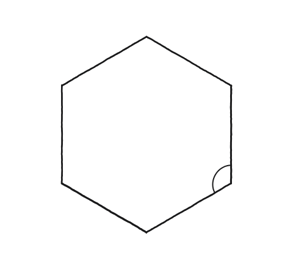
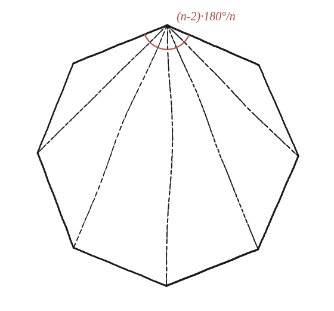

Quins són els angles d'un polígon regular de n costats?

Un angle sol, no la suma de tots
Cal distingir bé què es demana: no la suma de tots els angles interiors del polígon, sinó un angle sol —el d'un vèrtex qualsevol. Com que el polígon és regular, tots els vèrtexs tenen el mateix angle, de manera que calcular-ne un és calcular-los tots.
Primer, la suma de tots els angles
Des d'un sol vèrtex d'un polígon de n costats es poden traçar diagonals cap a tots els altres vèrtexs excepte els dos veïns (que ja hi són units per un costat) i cap a ell mateix. Això divideix el polígon en un ventall de n−2 triangles —per exemple, un hexàgon (n=6) es divideix en 4 triangles, un enneàgon (n=9) en 7. Com que la suma dels angles interns de qualsevol triangle és 180°, la suma de tots els angles interiors del polígon és (n−2)×180°.
Repartir aquesta suma entre els n vèrtexs
Aquesta suma (n−2)×180° és el total dels n angles del polígon junts. Com que el polígon és regular i tots els angles valen exactament el mateix, per trobar l'angle d'un sol vèrtex només cal dividir la suma entre n.

La fórmula, i la comprovació amb els casos coneguts
L'angle d'un vèrtex d'un polígon regular de n costats és:
angle = (n−2) × 180° / n
Comprovant-ho amb els dos casos que ja es coneixen de memòria: per n=3 (triangle equilàter), (3−2)×180°/3 = 60°; per n=4 (quadrat), (4−2)×180°/4 = 90°. Tots dos coincideixen amb el valor conegut, confirmant la fórmula.
L'angle d'un polígon regular de n costats és (n−2)×180°/n: es divideix el polígon en n−2 triangles des d'un sol vèrtex, se sumen els seus angles per obtenir la suma total, i es reparteix entre els n vèrtexs iguals.
Comprovació
Hexàgon (n=6): (6−2)×180°/6 = 120°. Octàgon (n=8): (8−2)×180°/8 = 135°.